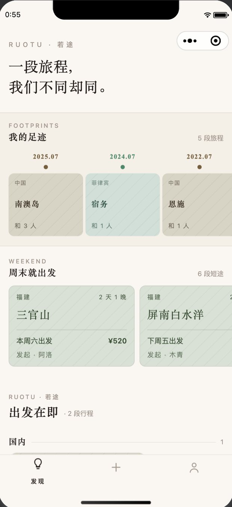
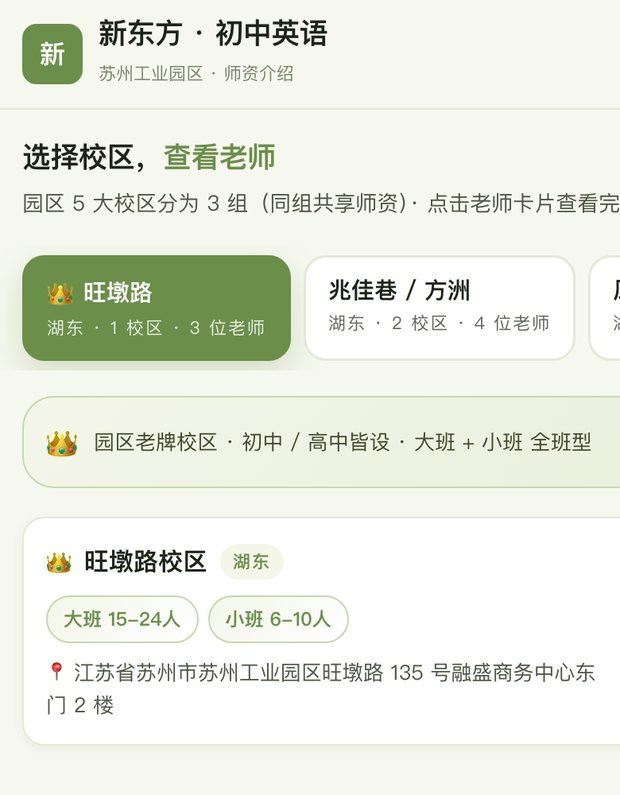

智聘 · 结构化招聘系统
覆盖从招聘需求审批、结构化面试、Offer 审批到入职转正、升职调薪的完整链路。行业差异用「方案包」配置，新增一个行业只加一个文件。
查看项目 →
结伴同行 · 结伴出行微信小程序
把「想去哪儿」和「和谁一起去」放进同一个界面。动工前先做了两版可点击原型，发现全手填会劝退发布后，改为按目的地生成行程草稿。
查看项目 →
新东方园区初中英语师资展示站
家长选课前总要反复询问老师信息，顾问只能逐个微信发图。按「校区 → 教师 → 学员口碑」三层组织 5 个校区、10 位教师与近百张口碑素材，做成可以随时查阅的线上入口。
打开线上网站 ↗